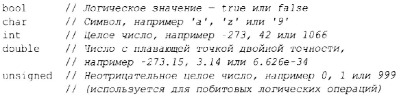
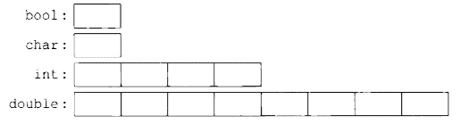

⇐1.3. Функции Содержание 1.4.1. Арифметика⇒
Каждое имя и каждое выражение имеет тип, который определяет, какие операции могут быть над ним выполнены. Например, объявление int inch; гласит, что inch имеет тип int, т.е. inch представляет собой целочисленную переменную.
Объявление представляет собой инструкцию, которая вводит объявляемую сущность в программу. Оно определяет тип этой сущности.
С++ предлагает небольшой зоопарк фундаментальных типов, но так как я не зоолог, я не буду перечислять их все. Вы можете найти их в справочниках, например в [59], или в Интернете [13]. Например:
Каждый фундаментальный тип непосредственно соответствует аппаратным возможностям и имеет фиксированный размер, который определяет диапазон значений, которые могут в нем храниться.
Переменная типа char имеет естественный для хранения символа на данной машине размер (обычно это 8-битный байт), а размеры всех прочих типов кратны размеру char. Размер типа зависит от реализации (т.е. может меняться от машины к машине) и может быть получен с помощью оператора sizeof. Например, sizeof (char) равен 1, а sizeof (int) часто равен 4.
Числа могут быть с плавающей точкой или целочисленные.
Чтобы сделать длинные литералы более удобочитаемыми для людей, можно использовать одинарные кавычки (') в качестве разделителя между цифрами. Например, л приближенно равно 3 .14159 '26535' 89793 '23846' 2 6433'83279'50288 (или, если вы предпочитаете шестнадцатеричную запись-Ох3. 243F' 6А88 '85А3' 0803).